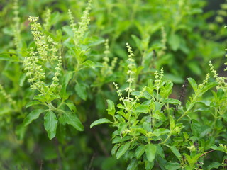

HerbiScan combines ancient herbal knowledge with modern artificial intelligence. Upload a plant image and instantly discover medicinal benefits, soil requirements, and regional details.
Upload a clear leaf image directly from your device to begin the identification process.
Our deep learning CNN model analyzes the leaf shape, texture, and color patterns to identify the plant.
Instantly receive plant identification along with medicinal benefits, soil requirements, and regional information.
Plants our AI can identify
Rich in Vitamin C and boosts immunity.

Powerful immunity booster.
Antibacterial and antiseptic plant.
Upload a clear leaf photo for identification
HerbiScan bridges ancient herbal wisdom with modern artificial intelligence. Users can upload a photo of a plant and instantly receive identification along with medicinal benefits, soil requirements, appearance details, and regional information.
The system uses deep learning models trained on medicinal plant datasets to analyze leaf structure, texture, and patterns for accurate classification.